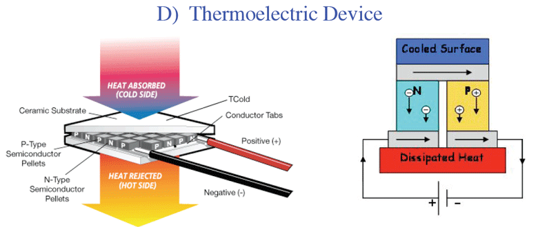
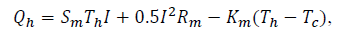
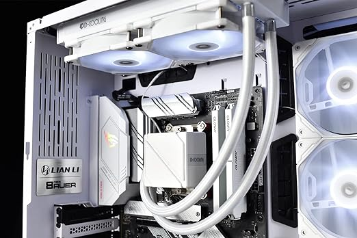
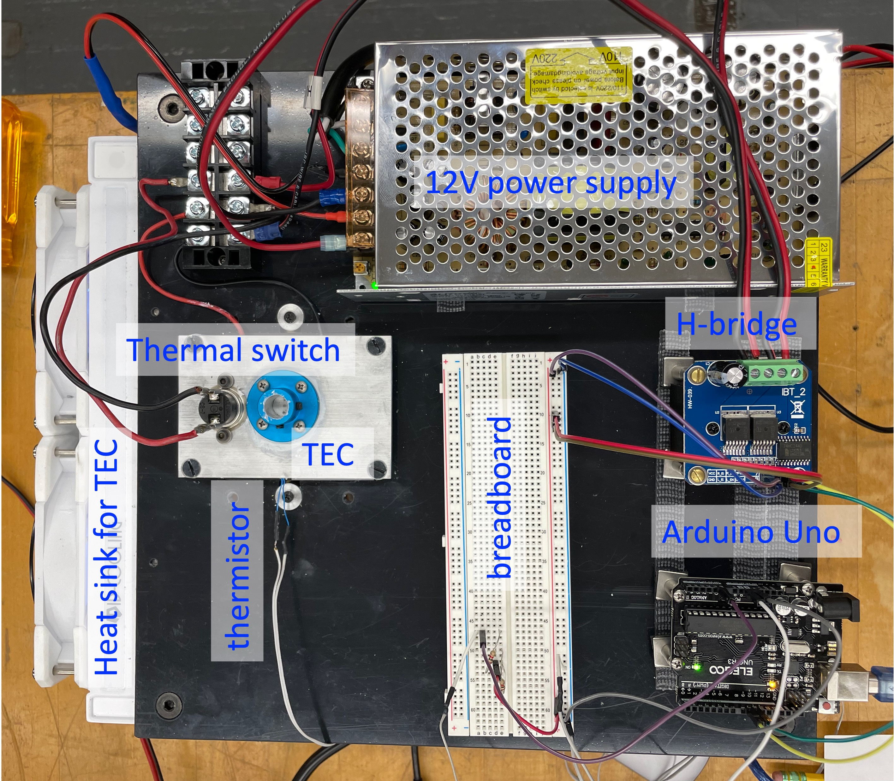
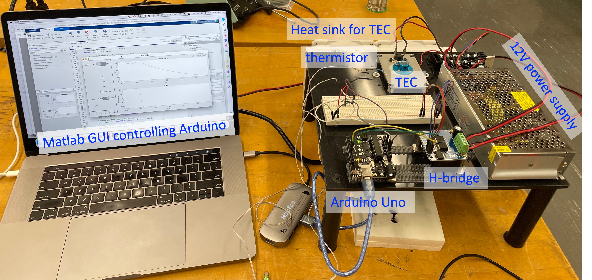

Hardware For Temperature Control¶
The temperature-control instrument connects low-power measurement and control electronics to a higher-power thermal actuator.
Interactive Instrument Map¶
Select a labeled component in the diagram to jump to its description and reference material below.
Signal And Power Path¶
thermistor → Arduino analog input → Arduino code → PWM outputs
→ H-bridge → TEC → heating or cooling
The laptop communicates with the Arduino through USB serial. It displays measurements, saves data, and eventually sends control settings. The bench power supply provides the TEC current; the Arduino supplies only logic-level control signals.
Component Reference¶
| Component | Function in the instrument | Reference |
|---|---|---|
| Thermal safety switch | Opens the power circuit near 70 °C if software control fails. | Cantherm R23 data sheet |
| 100 kOhm NTC thermistor | Senses TEC/block temperature through a voltage divider connected to an Arduino analog input. | Exact class part search · Thermistor beta equation |
| 100 kOhm precision resistor | Forms the thermistor voltage divider and sets the useful measurement range near room temperature. | Use the approved course part |
| TEC/Peltier element | Moves heat when current flows; reversing current reverses heat/cool direction. | Laird CP14-127-045 data sheet |
| Heat exchanger | Removes waste heat from the TEC hot side and rejects it to the room. | Koolance EXOS LT V2 manual |
| Arduino Uno | Digitizes sensor voltage, communicates over USB serial, and produces two PWM control signals. | Uno overview · Uno pinout · Official Uno Rev3 |
| BTS7960 H-bridge | Uses Arduino PWM inputs to drive TEC current in either direction from the external supply. | BTS7960 driver reference |
| Bench power supply | Supplies current-limited actuator power to the H-bridge and TEC. | Use the assigned laboratory supply |
| Oscilloscope | Verifies voltage levels, timing, PWM duty cycle, direction signals, and grounding. | Use the assigned laboratory oscilloscope |
| Laptop and Python software | Displays strip charts, logs data, sends commands, and later compares measurements with models. | Course repository |
Thermal Safety Switch¶
The hardware thermal switch is independent of the Arduino program. It cuts power near 70 °C and remains an important protection even after software temperature limits are added.
Open the thermal-switch data sheet
Thermistor¶
The class sensor is the 100 kOhm TDK/EPCOS B57861S0104F040V24 NTC thermistor. Use it with a 100 kOhm precision fixed resistor unless the voltage-divider design and firmware calibration are deliberately changed.
Arduino measures the divider voltage. Software converts voltage to thermistor resistance and then converts resistance to temperature with the beta equation.
Thermoelectric Cooler¶
The thermoelectric cooler, or TEC, is the thermal actuator. Reversing current reverses which face heats and which face cools. The hot face must remain thermally coupled to the heat exchanger.

- Laird TEC performance data
- Introduction to practical thermoelectrics
- Thermoelectric-effect background
The legacy model writes the heat carried by the TEC as a combination of the Peltier term, Joule heating, and ordinary thermal conduction:

Melcor thermal-solutions reference
Heat Exchanger¶
The water-cooled heat exchanger carries waste heat away from the TEC. The TEC cannot cool effectively if its hot side is allowed to overheat.

Arduino Uno¶
The Arduino reads sensor voltages and produces logic-level control signals. Its pins cannot directly power the TEC.
H-Bridge¶
The BTS7960-style H-bridge lets the low-power Arduino control the amount and direction of current from the external supply through the TEC.
On the class board:
- Arduino pins
9and10go to the two H-bridge PWM inputs. - The two H-bridge enable inputs are held high.
- Only one PWM direction input should be active at a time.
- Arduino ground and H-bridge logic ground must share a reference.
Laptop Software¶
The current course uses Python rather than MATLAB for new development. The laptop reads Arduino serial output, displays live plots, logs data, and later sends control commands.
Read about the course repository workflow
Class Apparatus Photographs¶


Additional Reference¶
Warning
The Arduino and USB cable do not supply TEC power. Do not energize the H-bridge or TEC until the assignment and instructor explicitly call for it.